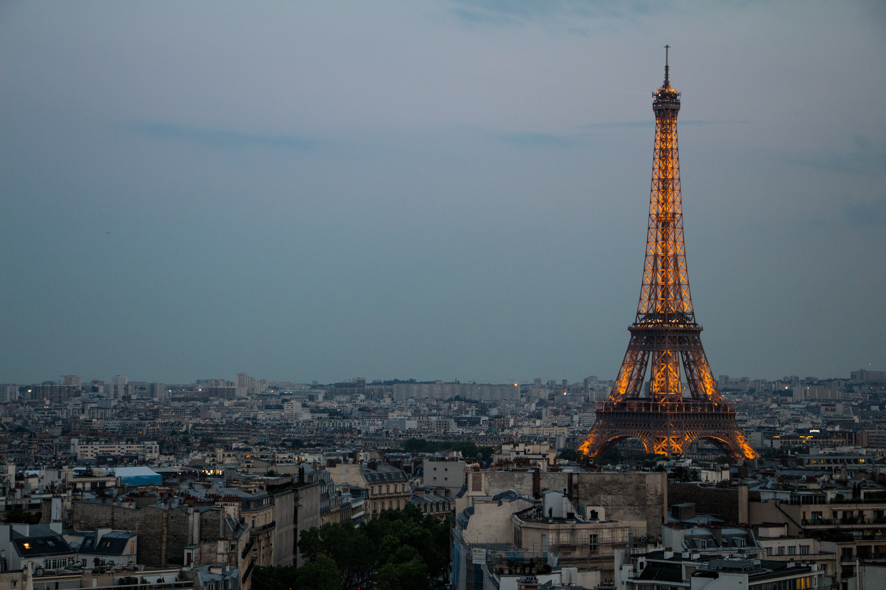

My Favourite Tourist Spots
Although i dont like Tourism very much but these places are breathtaking.
Rome, Italy
The Eternal City is a significant destination for travelers far and wide as it houses several emblematic monuments thanks to the ancient Roman Empire. It is the capital of Italy and the Lazio region.
It is famous for its historic and ancient structures, which makes the city’s view incredibly magical. The city’s various attractions include the Vatican City and the Colosseum, famous for their extensive histories as well as world-class museums.
Cape Town, South Africa

From wild safaris and penguins to a cable ride over Table Mountain, Cape Town is one of South Africa’s best places to visit. This port city is the capital of South Africa, with breathtaking views from Table Mountain which is famed for its flat top.
There is something for everyone in this beautiful city. Whether you want to taste rich wine from the vineyards, visit the national parks, or swim along the Indian Ocean, countless activities keep you busy.
Barcelona, Spain


Although the city of Barcelona is known in part for its Mediterranean landscapes, the city provides you with an infinite choice of impressive buildings, incredible cuisine, beautiful beaches, and entertaining nightlife to explore.
Antoni Gaudi has his name written all over Barcelona’s monumental buildings, and the most famous one is the La Sagrada Familia. It is the tallest church in the world and nothing like any religious structure you’ve seen before, making it one of the best places to visit during your Barcelona adventure.
It has also never been completed, and work has been nearly continuous since Gaudi began in 1882. It didn’t even open until 2010. The Casa Balto is another of Antoni’s unique creations. Although he didn’t build it from scratch, he renovated it in the 20th century.
Sydney, Australia
.jpg)

Sydney is the capital of South Wales and is widely known for its lovely, natural harbor with white beaches like Manly and Balmoral. This city is among the best places to visit with its towering modern architecture and iconic skyline.
Sydney has many tourist attractions, and the Sydney Harbor Bridge is among its most famous landmarks. It is among the world’s tallest steel arch bridges that you’d want to experience by going for a climb.
Bali, Indonesia
Bali means heaven, and this place proves that heaven exists on Earth. Located in Indonesia, this famous island is a bucket list destination for many travelers, thanks to its incredible scenery, cultural significance, and sandy beaches.
Bali will still give you many reasons to fall in love with it even if you’re not watching the sunset at Kuta beach. You could always spend your time learning the rich history, enjoying world-class dining, or just partying the night away at one of many popular clubs. Find out for yourself why this is considered one of the best places to visit in the world.
Washington, D.C.
The capital city of the United States of America, Washington, D.C. is famous for its well-governed culture, various monuments like the Lincoln Memorial which honors President Abraham Lincoln, and museums like the National Portrait Gallery.
The nation’s capital is also filled with a fantastic ambiance due to the famous cafes, boutique shops, restaurants, and clubs. Here you’ll also find the Smithsonian Institution, the country’s first national zoological park, and the National Museum of African American History and Culture.
While the city is known for having political roots, there are many tourist attractions in Washington, D.C. The White House is among the Neoclassical monuments that define Washington and among the city’s most popular travel destinations. The White House has housed the Presidents of the United States since the 18th century.
A tour to the White House is possible if arranged through congress members, and foreigners have to contact their embassy in Washington to help organize the tour.
The National Mall is another must-stop location in Washington, D.C. It holds some of the United States’ most important monuments, such as the Lincoln Memorial, the Vietnam Veterans Memorial, the Franklin Delano Roosevelt Memorial, the Jefferson Memorial, and the Washington Monument. Critical events have been hosted along the National Mall, including civil rights movements and presidential inaugurations.